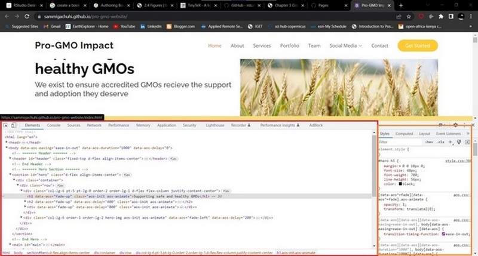

Chapter 1 Introduction
1.1 What is Leaflet?
Something to do with leaves? Of course not.Leaflet, when bare scrapped to its most basic definition, is simply an open source JavaScript library for interactive maps. It was developed in 2011 by Volodymyr Agafonkin, a Ukrainain with a mathematical background.
1.2 How does it work?
Leaflet can work if every line of code is inside a html document, so long as the code appears under the <script> tag. However, for a neat work, especially working with complex maps, it is recommended you separate the html file from its other components of main.js and style.css files.
“HTML we know, but what are main.js and style.css files?”, you may ask.
Well, beginning with html, which stands for Hypertext Markup Language, it is the language that is used in creating webpages. It is actually the standard of making static webmaps. I am yet to come across any webpage that is made up of everything apart from HTML. If you want to have a view of what HTML looks like, just right click any webpage and click Inspect in Google Chrome and Firefox. A toolbar will appear at the bottom or side of the webpage, depending on your settings.
knitr::include_graphics(rep("D:/gachuhi/my-leaflet/images/inspect.jpg"))Scroll over to the Element tab and you will have something that looks like this:
knitr::include_graphics(rep("D:/gachuhi/my-leaflet/images/elements.jpg"))The part encircled in red is the html that makes up the webpage for the ProGMO website in this case.
So, I am a GIS specialist, I want to learn how to make a html website so as to use leaflet and its functionalities. Whereas this document does not provide an indepth view of all the ins and outs of a html document, html websites are made up of elements known as tags. Tags, normally indicated by angle brackets (<>) are what introduce any form of content into a webpage, be it a paragraph (<p>), an image (<img>), video (<video>) and even an entire section (<div>, <section>, <article>). With this basic introduction, let’s create a basic html page.
To create a html element along with many other programming files, such as .js and .css which we shall see later, we use a text editor. A good example of a text editor is VS code or Pycharm. Check their websites on their installation methods for your personal computer. For creating html and working with .js documents later, we shall use VS Code unless otherwise stated.
Here is a basic html webpage.
<!DOCTYPE html>
<html lang="en">
<head>
<title>A basic html webpage</title>
<meta charset="utf-8">
<link rel="stylesheet" href="style.css">
</head>
<body>
<div id="division-1">
<p>Hello, World!</p>
</div>
<script src="main.js">
</script>
</body>
</html>
Let’s go through the above tags one by one.
<!DOCTYPE html>- It is an “information” to the browser about what document type to expect.<html lang="en">- It is the container for all other HTML elements (except for the<!DOCTYPE>tag). Thelangattribute is used to assist web engines know which language the website uses.<head>- It is not displayed on the webpage as other tags, but contains the metadata of the webpage.<title>- Can you guess? You had it right. Defines the title of the document. In our case, if you open the webpage assuming you created it in VS Code, the webpage shall be titled A basic html webpage at the tab of your web-browser.<meta charset="utf-8">- This is one of the metadata hosted by the<head>tag. We had mentioned earlier that the<head>contains the metadata of the webpage. Now here we would like to add that the<meta>tag found within the<head>is what defines the metadata. You can think of it as README text file that comes with any software you download. The<meta>tag in our case defines the encoding of our HTML5 document with the attributecharset="utf-8". Don’t think about this too much. HTML5 documents haveutf-8as their encoding. You can try to look up what encoding is but it’s not useful for this tutorial!<link>- Defines the relationship between a document and an external resource. It has various attributes butrelandhrefhave been used. The former specifies the relationship between the current document and the linked document/resource. Therelhere references thestyles.cssfile as the style sheet for our html. That is, the styles for our html are found in thestyles.cssfile.hrefon the other hand points the html document to the path of the stylesheet –thestyles.cssfile.<body>- This is the crux of your webpage. If nothing is within the<body>tags, your webpage will be as empty as a blank sheet of paper. This tag is the home for all the other contents of the webpage such as headings, paragraphs, images, tables etc.<div>- This is a special element that lets you group similar sets of content together on a web page. You can use it as a generic container for associating similar content. In the above html script, we have included an<id>attribute that is in other words, a unique identifier for this section of the webpage.<id>sare useful if you want to customize the appearance of a certain part of the webpage.<class>es behave in a similar way, but the difference between<id>and<class>is that<id>has to be unique, while<class>es can be used more than once.
9.<script> - It is used to embed executable code or data. In most cases it refers to JavaScript, which enhances interactivity.
If you may have noticed above, most HTML tags end with </name-of-tag>. With a few exceptions such as <img>, almost all HTML tags end this way.
1.3 JavaScript
JavaScript, shortened to .js is the language of the web. It introduces interactivity to HTML files. Without it our HTML files would just remain static. Have you ever clicked a link or a shiny button on a website and some visual or menu popped up? JavaScript was the engine behind all that. Think of .js as the life of the party while HTML is just the setting. Without .js creating webmaps would not be possible since adding JavaScript code to a html file using <script> is what makes the map appear on any website!
1.4 CSS files
CSS stands for Cascading Style Sheet. The CSS defines how your HTML is to appear, such as color and size of text, background color of the HTML as well as the structure of your HTML page.
CSS is quite a huge field despite being simple. However, the html elements of a webpage are accompanied by a curly bracket containing the specified properties and values.
Properties: These are human-readable identifiers that indicate which stylistic features you want to modify. For example, font-size, width, background-color.
Values: Each property is assigned a value. This value indicates how to style the property.
Using the example of our ProGMO website, this is how we would specify the font and color of the <body> element of our webpage. In some cases, the property values in CSS elements can be more than one, as in font-family below.
body {
font-family: "Open Sans", sans-serif;
color: #444444;
}The body in the CSS file is known as the selector. Selectors in CSS are what tags are in HTML files. However, selectors can be more specific, such as specifying the exact <div> that should be displayed in a particular way. Using our html file example, if there were other <div>s apart from the <div id="division-1"> above, we would specify our first one in a CSS document like so:
#division-1 {
font-family: "Open Sans", sans-serif;
color: #343a40;
}
We would specify other property values for our <div>s by their names following a # like so. Suppose there was a <div id="division-2"> somewhere in the HTML we could define some properties specific to it in the manner below:
#division-2 {
font-family: helvetica;
color: #000000;
}
For <classes> and they can be several, we select each particular class using the convention:
.class_name {
property: value
prperty2: value2}You can view the style of a particular HTML element using the styles tab found in the inspect console. It is shown in yellow bounds for a chrome webpage. Firefox should have a similar one.
knitr::include_graphics(rep("D:/gachuhi/my-leaflet/images/elements2.jpg"))
The MDN website provides a lot of information on HTML and CSS.
1.5 Summary
This chapter was an introduction to Hyper Text Markup Language (HTML), JavaScript and Cascading Style Sheets (CSS) languages. You learnt the following:
You can work with leaflet in either a html or JavaScript file. In html, the JavaScript code must appear under the
<script>tag.HTML files are made up of elements called tags. Tags are features that introduce any form of content into a webpage.
JavaScript is the main language of the web. It is the language responsible for the interactivity in most websites.
CSS stands for Cascading Style Sheet (CSS). CSS defines how your HTML is to appear, such as color and size of text, background color and even the structure of your HTML page.